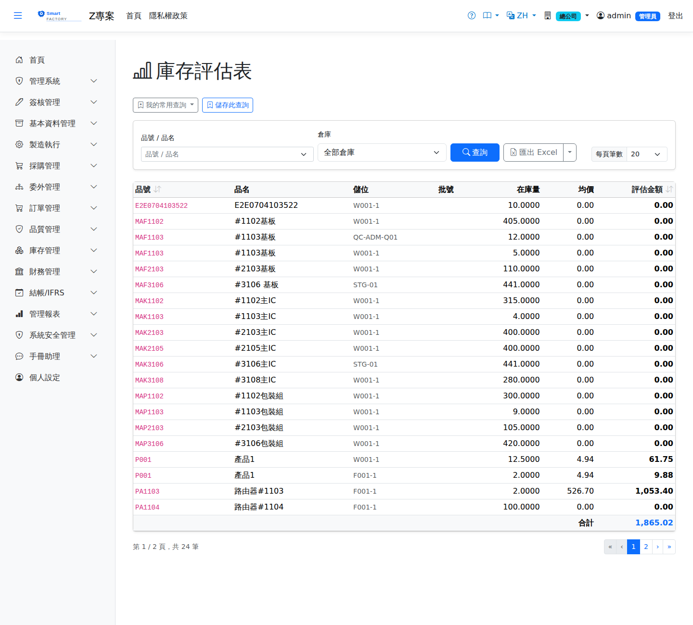

庫存評估表Inventory Valuation
路由：/InventoryValuation | 存貨評價金額報表Route: /InventoryValuation | Inventory valuation report
依成本方法（AVCO/FIFO）計算各品號存貨評價金額，供月結與財報存貨科目核對。Values the stock of each product by the costing method (AVCO/FIFO) for month-end close and reconciliation of the inventory account.

存貨計價畫面截圖（示意，實際欄位/資料依權限與查詢條件而異）Inventory valuation screenshot (illustrative; actual fields and data vary by permission and query criteria)
查詢Search
1
查詢列輸入條件後點「查詢」；欄位標題可點擊排序，清單下方有分頁導航。Enter your criteria on the query bar and click "Search"; column headers can be clicked to sort, and the paging controls sit below the list.
欄位說明Field reference
查詢條件Query criteria
| 條件Condition | 說明Guide |
|---|---|
| 品號 / 品名Product | 關鍵字模糊比對Keyword (partial match) |
| 倉庫Warehouse | 只評估特定倉庫的庫存；留空為全部Values the stock of specific warehouses only; leave blank for all |
報表欄位Report fields
| 欄位Field | 說明Guide |
|---|---|
| 品號 / 品名Product | 料件代碼與名稱Product code and name |
| 儲位Location | 庫存所在位置Where the stock is held |
| 批號Lot | 批號管制品的批次Lot of a lot-controlled item |
| 在庫量Qty on Hand | 評估時點的實際在庫數量Actual quantity on hand as at the valuation date |
| 均價Unit Cost | 移動加權平均（AVCO）單位成本Moving average (AVCO) unit cost |
| 評估金額Total Value | 在庫量 × 均價，即該筆庫存的帳面價值On-hand quantity × average cost, the book value of that stock |